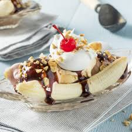
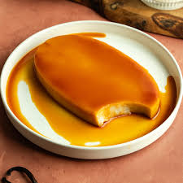
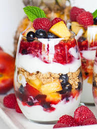

| Cake Recipes | ||
|---|---|---|
| Banana Split | INGREDIENTS
Vanilla Ice Cream, Chocolate Ice Cream, Strawberry Ice Cream, Banana, Whipped Cream, Strawberry Syrup, Cherries(Optional) |
STEPS
Split the banana in half vertically and place them on the sides. Get one scoop of each ice cream and align them between the sliced bananas. Use the whipped cream on top of the ice cream (and use the strawberry syrup on top). Add the cherry on top of the whipped cream. |
| Leche Flan | INGREDIENTS
1 tbsp of sugar per Ilanera, 10 large egg yolks, 12 oz Condensed Milk, 14 oz evaporated milk, 1/4 tsp salt, 1/2 tbsp lemon/lime juice, 1/2 tsp vanilla extract. |
STEPS
Heat up the steamer to prepare it. |
| Yogurt Parfait | INGREDIENTS
1 cup mixed berries fresh or frozen, 1/2 cup fat-free yogurt, any flavour, 1/4 cup granola/high protein breakfast cereal |
STEPS
Layer half of the fruit, yogurt and granola/cereal in a small glass |